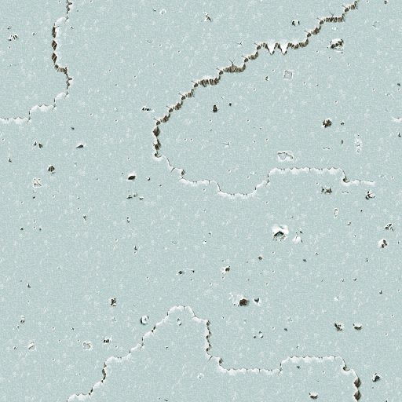

Майон

Карта
Предпросмотр рельефа карты планеты (файл .MP из игры), одна клетка - несколько пикселей.
- Размер карты
- 64 x 64 клеток
Место посадки (2) Залежи руды (16)

Связанное
- Открывает
- Минотавр, Снаряд Магна, Ракета Тень, Экстерминатор, Ракета Снифф, Ракета Дельта, Браларий
- Звёздная система
- Система Алануса
Параметры конфигурации, которых нет в игре (13)
MAP- 209_lodo.mp
COORDINATE_X- 24
COORDINATE_Y- 350
ASTEROIDS- 10
ENEMY- 1
TURN_SPEED- 100
X1- 10
Y1- 10
X2- 40
Y2- 40
SOURCE_MUL- 10, 10, 10, 10
SOURCE_ADD- 0, 0, 0, 0
BANK- 0, 1, 2, 3, 4, 5, 6, 7, 8, 9, 10, 11, 12, 13, 14, 15, 16, 17, 18, 19, 20, 21, 22, 23, 24, 25, 26, 27, 28, 29, 30, 31, 32, 33, 34, 35, 36, 37, 38, 39, 40, 41, 42, 43, 44, 45, 46, 47, 48, 49, 53